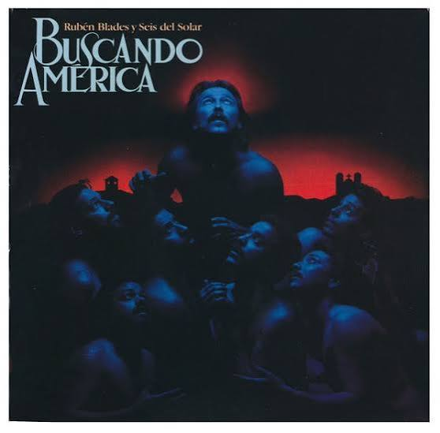

Películas Favoritas Arrival Denis Villeneuve Ver en IMDb ↗ El origen Christopher Nolan (2010) Ver en IMDb ↗ El viaje de Chihiro Hayao Miyazaki(2001) Ver en IMDb ↗
Discos Favoritos Source of Fire Hossam Ramzy (1995) Escuchar en Spotify ↗ Baladi Plus Gossam Ramzy (1994) Escuchar en Spotify ↗  Buscando América Rubén Blades (1984) Escuchar en Spotify ↗